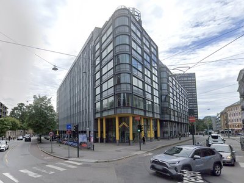

<!DOCTYPE html>
<html lang="en"></html>

<head>
    <meta charset="UTF-8">
<link rel="stylesheet" type="text/css" href="CSS/styles.css">
<title>Campus Pilestredet</title>
<meta name="viewport" content="width=device-width, initial-scale=1">
</head>

<body class="mainview">
    <header>
        <nav>
            <ul>
                <li><a href="index.html">HOME</a>
                    <a href="page1.html">PAGE1</a>
                    <a href="index.html">PAGE2</a>
                    <a href="page1.html">PAGE3</a>

                </li>
            </ul>
            
            </nav>

    </header>

<main>
    <article>
        <h1>Campus Pilestredet</h1>
        <p>  Ei rekkje av bygningane ligg i det tradisjonsrike Frydenlund-området ved Bislett. Der ein tidlegare kunne kjenne dufta av malt og humle frå eit av dei største ølbryggeria i landet, finn du no undervisningsrom, universitetsbibliotek, lesesalar og kantiner.</p>
        <p>I nærleiken finn du fleire av bygningane til universitetet i Pilestredet Park, det tidlegare Rikshospitalet, og universitetet sitt største bygg: Ellen Gleditschs hus i Pilestredet 35.</p>
            
        <p>OsloMet sine bygg i Pilestredet har trimrom, klatrevegg og gymsalar som studentar og lærarar kan nytte seg av, også på fritida. Vi har også velferdslokale for studentar med blant anna ei kro.</p>
        <div class="text-referance"   >Source: <a href="https://www.oslomet.no/om/studiested-pilestredet" target="_blank">Oslomet webpage</a></div>
            

    </article>
    <picture>
        <source media="(min-width: 800px)" srcset="/images/P35-1200.png">
        <source media="(min-width: 500px)" srcset="/images/P35-600.png">
        
      </picture>
    <aside>
        <h2>  </h2>
    </aside>


</main>

<footer>

</footer>


</body>

</html>
